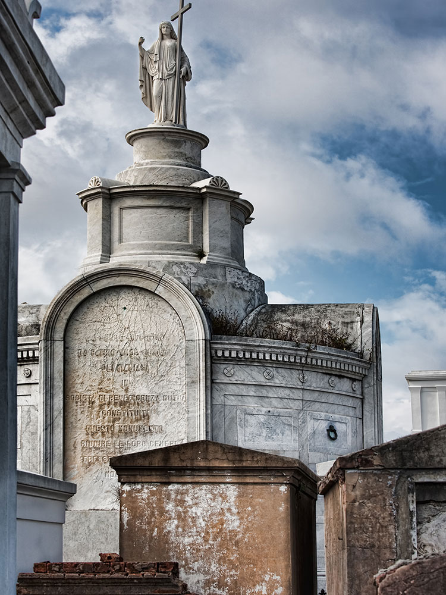
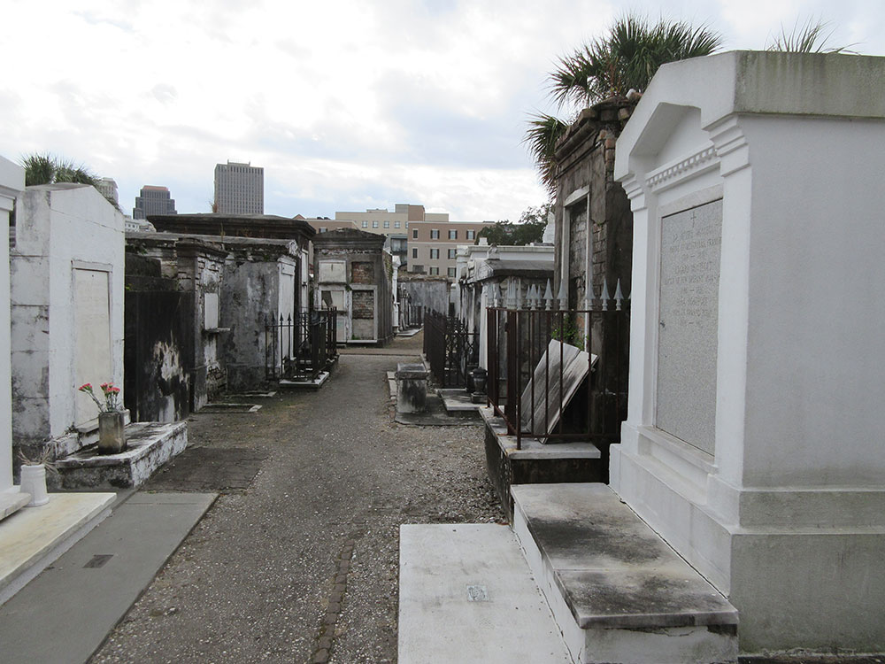
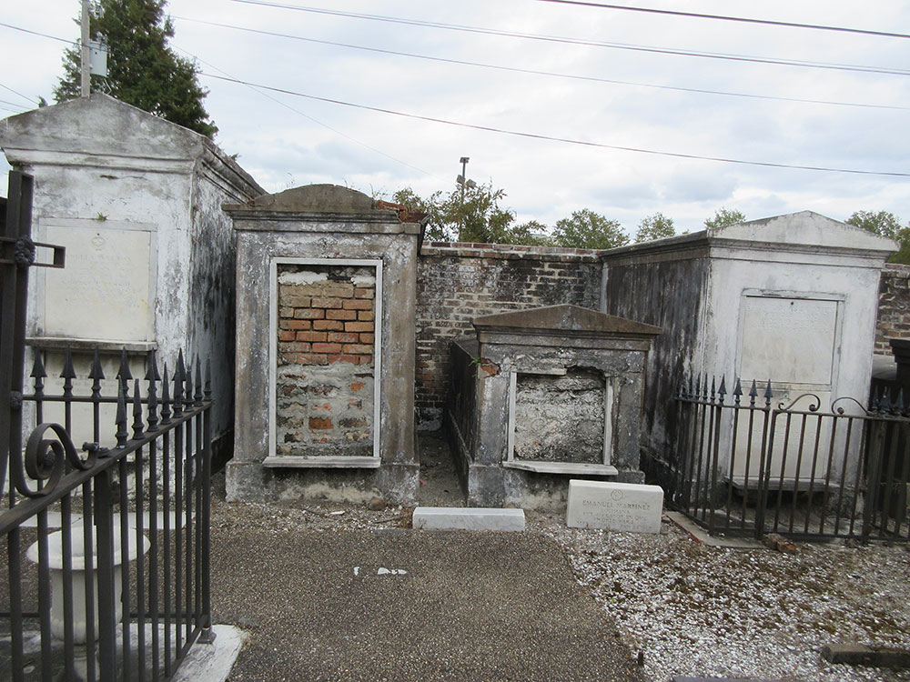
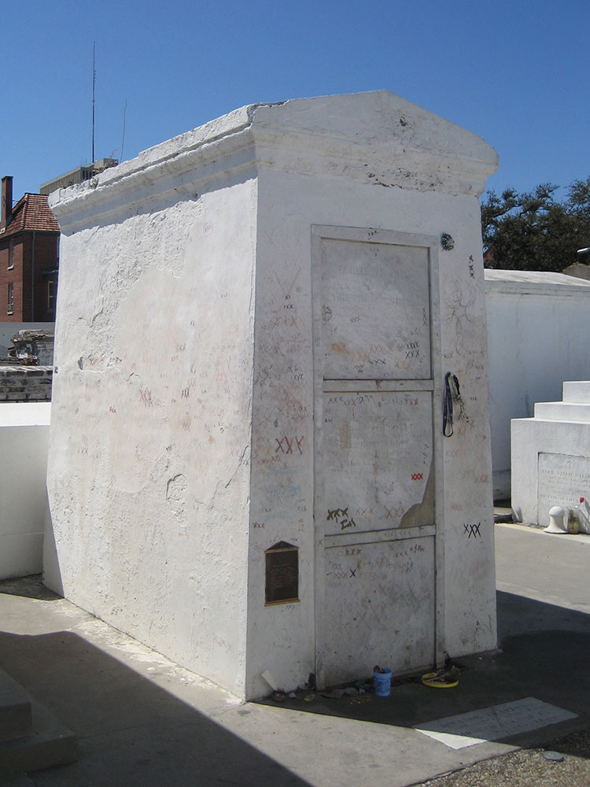

Three Catholic cemeteries where most of the graves are above-ground vaults constructed in the 18th and 19th centuries with St. Louis Cemetery No. 1 being the oldest and most famous
General Information
How to Get There
Head north on Carondelet St toward Union St. Turn left onto Canal St. Turn right onto Burgundy St. Turn left at the 2nd cross street onto Bienville St. Turn right onto Basin St. Sharp left to stay on Basin St
Overview
Saint Louis Cemetery is the name of three Catholic cemeteries in New Orleans, Louisiana. Most of the graves are above-ground vaults constructed in the 18th and 19th centuries.
Cemeteries No. 1 and No. 2 are included on the National Register of Historic Places and the Louisiana African American Heritage Trail.
St. Louis Cemetery No. 1 is the oldest and most famous. It was opened in 1789, replacing the city's older St. Peter Cemetery as the main burial ground when the city was redesigned after a fire in 1788
It is 8 blocks from the Mississippi River, on the north side of Basin Street, one block beyond the inland border of the French Quarter. It borders the Iberville housing project. It has been in continuous use since its foundation. The nonprofit group Save Our Cemeteries and commercial businesses offer tours for a fee.
Famous New Orleanians buried in St. Louis No. 1 include Etienne de Boré, wealthy pioneer of the sugar industry and the first mayor of New Orleans; Homer Plessy, the plaintiff from the landmark 1896 Plessy v. Ferguson Supreme Court decision on civil rights. Ernest N. "Dutch" Morial, the first African-American mayor of New Orleans was interred there in 1989. Subsequently, Morial's family built a new family tomb at St. Louis Cemetery No. 3, and Morial's body was reinterred there in late 2014. Notable creole author and educator Alexander Dimitry is buried at Saint Louis Cemetery Number One. Most of the Dimitry family is interred there including; Andrea Dimitry and his wife Marianne Celeste Dragon. Marianne Céleste Dragon was the subject of a famous portrait painted by José Salazar.
The renowned Voodoo priestess Marie Laveau is believed to be interred in the Glapion family crypt. Other notable New Orleanians here include Bernard de Marigny, the French-Creole aristocrat and politician who founded both the Faubourg Marigny and Mandeville, Louisiana; Barthelemy Lafon, the architect and surveyor who allegedly became one of Jean Lafitte's pirates; and Paul Morphy, one of the earliest world champions of chess. Delphine LaLaurie, the notoriously cruel slave owner, is also believed to lie in rest here. Architect and engineer Benjamin Latrobe was buried at St. Louis No. 1 after dying from yellow fever in 1820, while doing engineering for the New Orleans water works. In 2010, actor Nicolas Cage purchased a pyramid-shaped tomb to be his future final resting place.
The cemetery spans just one square block but is the resting place of many thousands. A Protestant section (generally not vaulted) lies in the northwest section.
St. Louis No. 2 is located some three blocks back from St. Louis No. 1, bordering Claiborne Avenue. It was consecrated in 1823. A number of notable jazz and rhythm & blues musicians are buried here, including Danny Barker and Ernie K. Doe. Also entombed here is Andre Cailloux (1825-1863), African-American Union hero and martyr of the American Civil War.
The cemetery received minor flooding during the aftermath of Hurricane Katrina, and its tombs seemed virtually untouched by the storm when the water went down, aside from the brownish waterline visible on all structures that were flooded.
There are many notable citizens of 19th and 20th century New Orleans laid to rest here. These include the Venerable Mother Henriette DeLille, who is a candidate for sainthood by the Catholic Church, and Jean Baptiste Dupeire (1795-1874) prominent citizen of New Orleans, among others.
St. Louis No. 3 is located some 2 miles (3.2 km) back from the French Quarter, some 30 blocks from the Mississippi, fronting Esplanade Avenue near Bayou St. John. It opened in 1854. The crypts on average are more elaborate than at the other St. Louis cemeteries, including a number of fine 19th century marble tombs. Those entombed include ragtime composer Paul Sarebresole, photographer E. J. Bellocq, and painter Ralston Crawford. Also, one of the most famous to be entombed here, is Sweet Emma Barrett [1897-1983], a very gifted self-taught piano player and singer, who helped make New Orleans Jazz the treasure as we know it to be. New Orleans mayor Ernest N. "Dutch" Morial was reinterred at St. Louis Cemetery No. 3 in a new tomb for the Morial family.
St. Louis No. 3 also includes a Greek Orthodox section. The cemetery was heavily flooded during the aftermath of Hurricane Katrina in 2005, but its tombs escaped relatively unscathed. There was some plaster damage from debris.
This article uses material from the Wikipedia article "Saint Louis Cemetery" which is released under the Creative Commons Attribution-Share-Alike License 3.0








